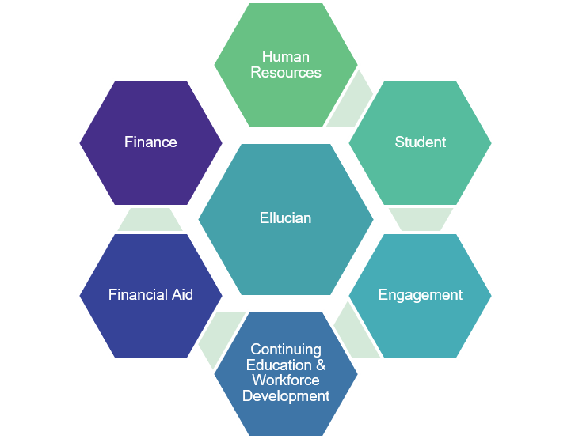
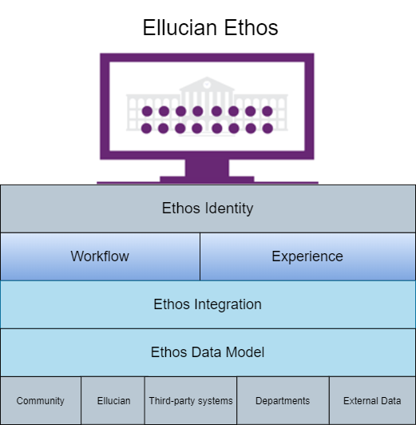
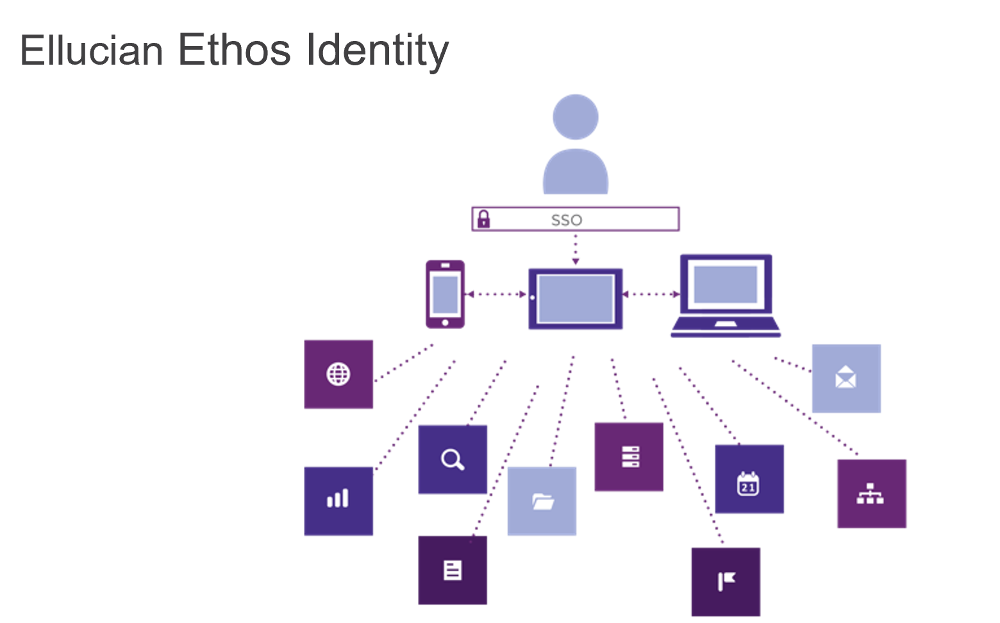
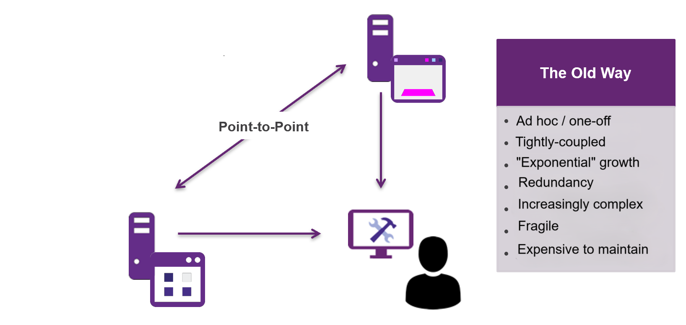
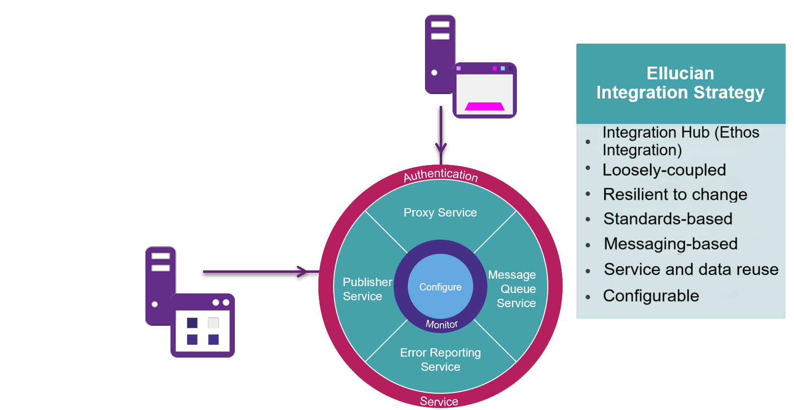
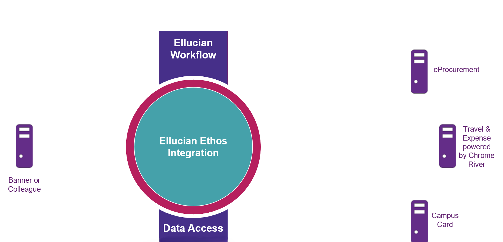
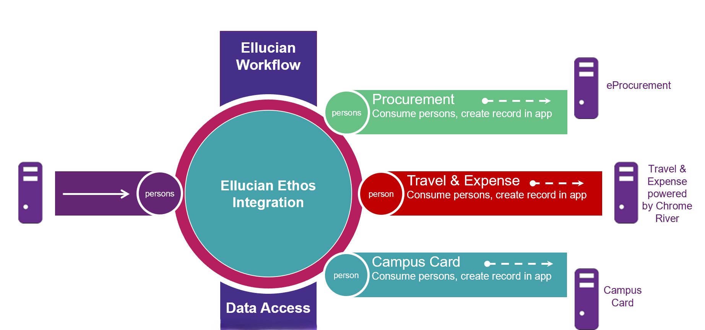

About Ellucian Ethos
Ellucian Ethos is a suite of products that enables institutions to manage their integrations to unify data from across their ecosystem in support of dispersing information across their institution.
Ethos users configure applications to consume data from various sources, manage APIs, and use consolidated monitoring and troubleshooting of Ellucian solutions in a single place.
Ellucian Ethos integrates workflows, data, and reporting, at every stage of the student life cycle, whether on-premise or in the cloud.
Ellucian Ethos makes use of a common language to connect many systems and allow them to communicate. Students and staff have access to data at any time they need it, communicating in real time. When data is available immediately for all, all members of an institution greatly increase their efficiency and that in turn, drives costs down.
- Ellucian Ethos Identity
- Ellucian Ethos Data Model
- Ellucian Ethos Integration
- Ethos Data Connect
- Ellucian Ethos Data Access
- Integrated: Ellucian Ethos integrates our entire portfolio for consistent deployment and efficient data flow across every task and department.
- Secure: Ellucian Ethos tightly protects student and institutional data.
- Extensible: Ellucian Ethos quickly expands applications to offer new functionality without complex coding that requires intense Information Technology services.
The key components of Ellucian Ethos are the specific capabilities to support a modern campus and its infrastructure. Ellucian Ethos is designed to provide choice and deployment options based on your specific business needs, in real time.
Each component is built distinctly for higher education. Some of the capabilities are embedded and powered by Ellucian Ethos. Others, while the capabilities are embedded, are also available as stand-alone products.
Why Ellucian Ethos
Ellucian Ethos allows all people associated with an institution to access the same, real time data at any time of the day. Using a common language for the entire institution ensures that all systems can exchange data, reducing the high costs of integration.
You can make use of this vast amount of real time data to drive decision-making.
Benefits of a connected campus for people, processes, experiences

Ellucian realizes your system is comprised of many other applications as well. For example, you could have a payment vendor that is handling housing and meal plans, your campus card, a bookstore, and learning management system. You likely have several applications that you have built yourselves, to meet specific institution needs that are not addressed by off-the-shelf or commercial software.
The mechanism that facilitates communication with all your applications using a universal language, is the Ellucian Ethos Data Model. The Ellucian Ethos Data Model allows all your applications to be able to communicate with one another, using a universal language.
High Level Architecture
Ellucian Ethos consists of many components.

Ellucian Ethos Identity allows you single sign-on (SSO) and secure authentication, saving time and cost. Ellucian Ethos Data Model gets systems, data, and people to talk to each other. It calls data from varied applications, both Ellucian and third party, and puts it in a standard language and format that you can use across the institution and with other institutions and partners. The Ellucian Ethos Data Model is built on standardized nomenclature familiar to every institution that is using the model. When connected, all parties can communicate using the same language. From day one, the Ellucian Ethos Data Model creates a single student record that faculty, staff, and other service providers build on and share throughout the school cycle.
While the higher education data model standardizes data, Ellucian Ethos Integration ensures the data flows seamlessly between all your systems and applications. Ellucian Ethos Integration works with the Ellucian Ethos Data Model. For example, you have a housing application. If it is mapped correctly to the Ellucian Ethos Data Model you send information through Ethos Integration to other applications that are impacted by updates. Ethos Integration validates that data is in the proper format before sending that data to various receiving systems, allowing everyone working in many roles campus-wide to use that information and capitalize on it. Ellucian Ethos Data Model and Ethos Integration allow everyone to work smarter and make informed decisions about institutional success.
Ellucian Ethos Data Access is the deep repository of information that is exchanged through the Ellucian Ethos Data Model and Ellucian Ethos Integration. It is the data in Ellucian Ethos Data Access that members can extract and analyze to make educated, meaningful decisions.
Ellucian Ethos Identity
Ellucian Ethos Identity helps you ensure that users have seamless access to all your connected applications with single sign-on (SSO). It takes the complexity out of passwords, allowing faculty and students easier access to information without compromising security. This saves time and cost.

Ellucian Ethos Data Model
One of the biggest challenges in higher education is that you have many applications that are seeking student-based information, and they all speak different languages. The Ellucian Ethos Data Model solves this challenge by allowing varied systems and staff to communicate and share data with one another.
The Ellucian Ethos Data Model is built on a common language, using standardized nomenclature that is familiar to every institution using the model, allowing all parties to collaborate.
From the initial contact a student has with your institution, the Ellucian Ethos Data Model creates a single student record that faculty, staff, and other service providers share and build on throughout the student life cycle, from enrollment through graduation, and beyond. After a data model is defined, the model shifts from each solution having its own understanding to a solution view.
No matter what application you interact with, if that application speaks the Ellucian Ethos Data Model language, you can connect it with Ethos Integration. Data from that application is then available in your Ellucian Ethos environment. This provides you with a single source of data for reporting across your entire data set, from Ellucian and third-party applications alike. Ethos Integration enables these applications to talk to each other.
See About the API Catalog and API documentation for more information. Scroll to API Catalog. From there you can search for the data models, get all of the request types, and look at the data structure.
Ellucian Ethos Integration
The traditional approach to data integration has been to develop specific connectors between the applications that need to share data.

With point-to-point integrations, the integration must take data transformation, data transport, and any other services that are required for the specific pair of applications into account.
As the number of applications grows, the number of point-to-point integrations required to create a comprehensive integration architecture begins to increase exponentially. Applications often require similar data and services from other applications, creating redundancy. For example, applications that integrate with student systems often require person data, address data, and the ability to create a charge or a payment on a student’s account. Because of their application-specific nature, point-to-point integrations tend to replicate the logic for these functions where they are needed. Even with a comprehensive strategy for shared code or data-oriented services, the result is an increasingly complex architecture as the number of integrated applications increases. In the long run, the combination of these factors make point-to-point integrations expensive and time-consuming to maintain.
A single hub for all integrations
The Ellucian integration strategy provides a better alternative to point-to-point integration. Ethos Integration is the heart of an institution's ecosystem that facilitates seamless data messaging and transformation to disseminate information throughout the campus to centralize and standardize integration between Ellucian, Ellucian partners, and customer-developed applications, whether those applications exist on-premises or in the cloud.
Rather than each application requiring a separate connector to integrate with another application, applications connect to Ethos Integration, decoupling them from one another and making them more resilient to changes.
- Ethos Identity enables our products to work with single sign-on (SSO) and offers user provisioning capabilities.
- Ethos Integration is used for API management and a single location to troubleshoot and monitor resources, configure APIs and events, and configure integrations for the ecosystem.
- Data Connect provides low-code tooling for point-to-point integrations, file transformations, and serverless APIs.

Connections with the hub use standard data formats, protocols, and messaging patterns to simplify and standardize integration. The standard data format is the Ellucian Ethos Data Model. Services exposed to the hub and the applications that integrate with it are Representational State Transfer (REST)-based services that communicate over HTTPS. REST is an architecture style for designing networked applications. REST relies on a stateless, client-server, cacheable communication protocol.
The hub enforces application integration by means of standard messaging patterns: request and reply messaging for shared services; publish and subscribe messaging for data synchronization. These patterns allow services and data to be reused, greatly reducing, if not eliminating redundancy.
Integration strategy

Ellucian Ethos Integration connects data producers with data consumers and provides the infrastructure through which data and requests for data are exchanged. Authoritative applications publish data change notifications to Ellucian Ethos Integration for the entities they own. Applications that require their data to be in sync with the authoritative source can subscribe to change notifications for specific entities. These subscribers are responsible for querying Ellucian Ethos Integration on a periodic basis to retrieve change notifications so that they can update their own data stores.

Ellucian Ethos Integration not only integrates the applications, but also enables the integration for multiple campuses and systems.
Ellucian Ethos Data Connect
Ethos Data Connect is a data transformation framework that provides the ability to connect to different data sources and data formats using Ellucian Ethos. Data Connect provides the ability to define data workflows that include data transformations and mappings to third-party sources and formats.
Delivered Data Connect integrations
- An integration with the National Student Clearinghouse Postsecondary Data Partnership (NSC-PDP) initiative in the U.S. This integration extracts data from Banner or Colleague, creates PDP data files in the data file format specified by the NSC, and transmits those files to the NSC.
- An integration that supports the processing of teacher training applications submitted to institutions through the Apply for teacher training service of the Department for Education (DfE) Apply service in England. This integration retrieves applications using the DfE's API, sends them to Banner, Quercus, or CRM Recruit for processing, and posts the decisions back to the DfE.
Data Connect Integration Designer
You can build your own integrations using the Data Connect Integration Designer, which is available with Experience Premium.
The Data Connect Integration Designer enables users to create custom integrations with Data Connect's low-code tooling. Users can use the designer to get data from APIs or files, transform and map data, and send to target destinations such as and ERP, S3 bucket, SFTP server, Data Access, or the Insights DataWarehouse
Access to Data Connect through Ellucian Experience
Users access Data Connect through the Data Connect cards in Ellucian Experience. Before setting up Data Connect, you will need to set up Ellucian Experience.
Where to find the documentation
This Data Connect documentation provides general procedures for setting up user access to Data Connect, using the Data Connect Integration Designer to create your integrations, and creating and managing pipeline jobs.
Documentation specific to each Data Connect integration delivered by Ellucian is with the related product documentation.
Ellucian Ethos Data Access
Ellucian Ethos Data Access combines the power of the Ellucian Ethos Data Model and Ellucian Ethos Integration to store data from multiple tenants in the cloud-based data storage. Other applications can then consume that data through Ellucian Ethos Integration.
Data loads
Ellucian Ethos Data Access extracts data from authoritative sources, whether they are deployed on-premises, such as Ellucian Banner or Ellucian Colleague, or whether they are deployed in the cloud, and stores it in secure multi-tenant cloud data storage.
- Loading data for the initial population of the cloud data storage.
- Updating data after the authoritative source sends change notifications through Ellucian Ethos Integration for up-to-date data.
- Reloading the data from the authoritative source due to a change to the Ellucian Ethos Data Model.
After the system has stored data to the cloud data storage, solutions can access and use this real-time data. Depending on the type of data request and how the applications were configured, Ethos Integration may forward the request to Data Access, or to the authoritative source. Refer to Add GraphQL resources to an application (single owner) and GraphQL requests.
Data model extensibility
Data Access supports the extensibility capabilities of Ellucian Ethos Data Models. Data Access data models are only accessible through GraphQL integrations orchestrated through Ethos Integrations.
Data Access supports semantic versioning of Ellucian Ethos Data Models to help institutions quickly identify and understand changes made to an Ethos Data Models across multiple versions.
The Data Access tenant for your institution contains multiple Data Access environments (that is Test, Production, and potentially others), and each environment contains its own view of Ethos Data Models and their extensions.
Within Data Access, each institution has its own tenant. Multi-campus institutions might have multiple tenants, one for each campus.
Each tenant initially contains two Data Access environments: Test and Production. The number of environments present depends on the number of environments licensed for Ethos Integration. You can license additional environments if needed to support your Ethos Integration implementation. Environments are independent of each other and contain extended and Institutional Ethos Data Models.
Within an environment, you can create new or extend existing Ethos Data Models; which define how you want to share data through Ethos Integration within a particular environment. For example, during testing in the test environment, you can extend the Persons data model with an additional property, such as the LDAP user id.
- Extend existing Ethos Data Models in support of specific application integration needs.
- Extend existing data models without modifying their baseline definition.
- Create custom data models in support of specific application integration needs.
- View properties of data models by version.
- By creating new institutional data models.
- By extending existing Ellucian Ethos Data Models.
See Data model extensibility.
Change notifications
change notifications communicate to Ellucian Ethos Integration that a data change occurred in the authoritative source.
Ellucian Ethos Integration stores the change notifications in a queue. Data Access checks this queue for change notifications. When found, Data Access retrieves the changes and updates the cloud data storage.
Data Access pauses change notification updates for only the resources that are loading. The rest of the resources will consume changes as they come in.
For example, Data Access has addresses, persons, and students loaded. The administrator decides to reload persons. change notifications come in for the three resources. Addresses and students are updated as the change notifications come in for them. Data Access queues the ones for persons, for them to resume consuming when the resource finishes bulk loading.
Unlike the initial data load and data reloads, updates to records in the authoritative sources are retrieved to the cloud data storage during background processing.
The initial data load and data reloads require you to initiate the data pull.
Recommended web browsers
Ellucian Ethos Data Access is certified for the latest two versions of Google Chrome.
You can also use Mozilla Firefox, Apple Safari, and Microsoft Internet Explorer. However, these browsers are not certified for use with Data Access.
Ellucian Ethos support information
The following documents are no longer supported.
- Ellucian Ethos Quick Reference Guide
- Ellucian Ethos Data Model API Availability
- Banner Ethos API Compatibility Matrix
For more information on product dependencies and compatibility, see the announcement in the Ellucian Customer Center.
- Colleague Ethos API Compatibility Matrix
For more information on product dependencies and compatibility, see the announcement in the Ellucian Customer Center.